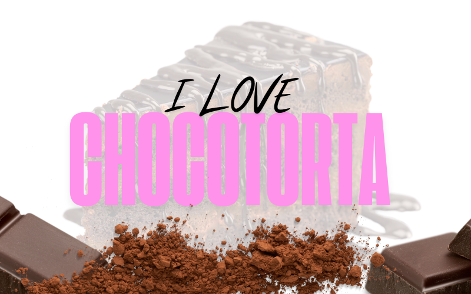
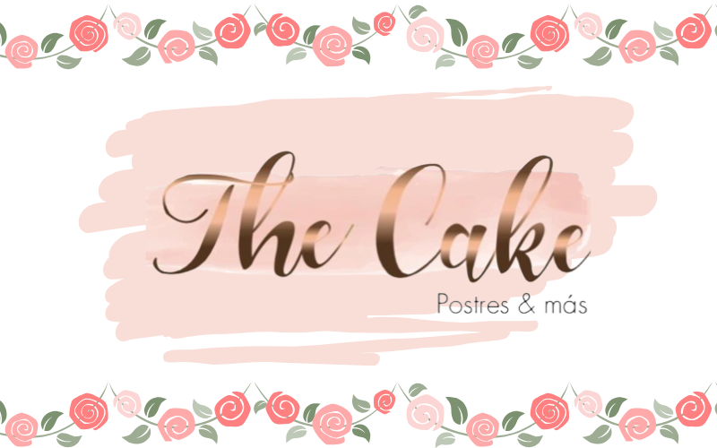

Ubicado en la zona sur, en la calle Gabriel René Moreno, La Paz, Bolivia.
Dirección: Gabriel René Moreno, La Paz, Bolivia
Ubicado Calle Colon entre las calles Ingavi y La Madrid Tarija, Bolivia
Dirección: Cerca de la Biblioteca conventual Franciscana y el Museo Fray Francisco Miguel Mari